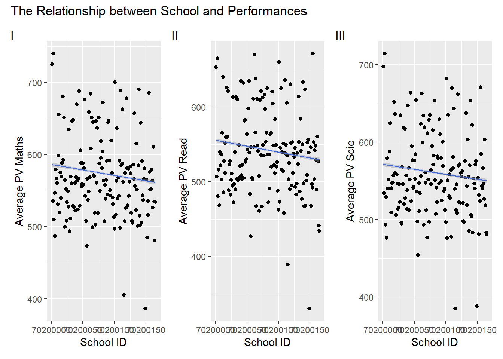
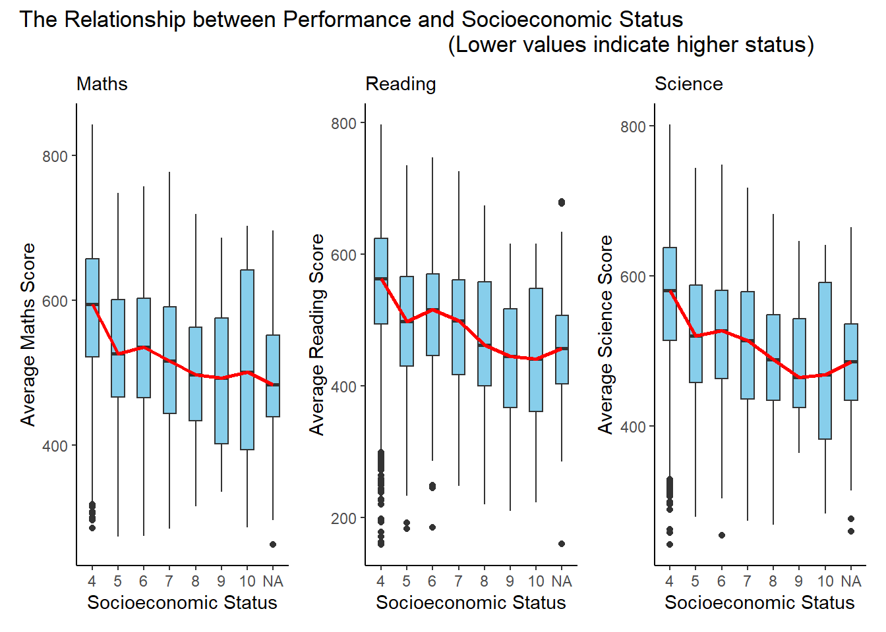

pacman::p_load(ggrepel, ggthemes, hrbrthemes, patchwork, tidyverse, haven, gridExtra, ggplot2, plotly, ggridges, cowplot)Take-home Exercise 2: Peer critique and DataVis Makeover
1 Overview
This critique will evaluate a peer’s take-home exercise, specifically Take-home Exercise 1, focusing on clarity and aesthetics.
1.1 Loading R packages
The original design will then be remade using data visualization design principles and best practices using ggplot2, its extensions, and tidyverse packages.
1.2 Dataset
The original dataset (Student questionnaire data file) was downloaded from PISA.
stu_qqq <- read_sas("../../data/cy08msp_stu_qqq.sas7bdat")
stu_qqq_SG <- stu_qqq %>%
filter(CNT == "SGP")
write_rds(stu_qqq_SG,
"data/stu_qqq_SG.rds")
Related_math_read_scie_data <- stu_qqq_SG %>%
select(contains(c("ID","ST004D01T","math", "read", "scie","ST259Q01JA","ST259Q02JA","ST005Q01JA","ST007Q01JA")))
write_rds(Related_math_read_scie_data,
"data/Related_math_read_scie_data.rds")Related_math_read_scie_data <-
read_rds("data/Related_math_read_scie_data.rds")
# Data about Maths/Read/Science
Related_math_read_scie_data <- Related_math_read_scie_data %>%
mutate(avg_pvMATH = rowMeans(select(., ends_with("Math")), na.rm = TRUE))
Related_math_read_scie_data <- Related_math_read_scie_data %>%
mutate(avg_pvREAD = rowMeans(select(., ends_with("READ")), na.rm = TRUE))
Related_math_read_scie_data <- Related_math_read_scie_data %>%
mutate(avg_pvSCIE = rowMeans(select(., ends_with("SCIE")), na.rm = TRUE))
# Data about School
Related_math_read_scie_data <- Related_math_read_scie_data %>%
group_by(CNTSCHID) %>%
mutate(avg_pvMATH_school = mean(avg_pvMATH, na.rm = TRUE))
Related_math_read_scie_data <- Related_math_read_scie_data %>%
group_by(CNTSCHID) %>%
mutate(avg_pvREAD_school = mean(avg_pvREAD, na.rm = TRUE))
Related_math_read_scie_data <- Related_math_read_scie_data %>%
group_by(CNTSCHID) %>%
mutate(avg_pvSCIE_school = mean(avg_pvSCIE, na.rm = TRUE))
# Data about Socioeconomic Status
Related_math_read_scie_data <- Related_math_read_scie_data %>%
mutate(Parent_Edu_level = ST005Q01JA + ST007Q01JA)
df <- Related_math_read_scie_data2 Visualization Critique and Remake
2.1 Maths/Reading/Science Distributions
2.1.1 Critique
Three histograms are used to reveal the distribution of students’ maths, reading, and science score.
Click to view the code.
p1 <- ggplot(data=Related_math_read_scie_data, aes(x = avg_pvMATH)) +
geom_histogram(bins=10,
boundary = 100,
color="black",
fill="grey") +
geom_vline(aes(xintercept = median(avg_pvMATH)), color = "red", linetype = "dashed") +
annotate("text", x = median(Related_math_read_scie_data$avg_pvMATH), y = 30,
label = paste("Median:", round(median(Related_math_read_scie_data$avg_pvMATH), 2)),
vjust = 1, color = "red") +
labs(y = "Count")
p2 <- ggplot(data=Related_math_read_scie_data, aes(x = avg_pvREAD)) +
geom_histogram(bins=10,
boundary = 100,
color="black",
fill="grey") +
geom_vline(aes(xintercept = median(avg_pvREAD)), color = "red", linetype = "dashed") +
annotate("text", x = median(Related_math_read_scie_data$avg_pvREAD), y = 30,
label = paste("Median:", round(median(Related_math_read_scie_data$avg_pvREAD), 2)),
vjust = 1, color = "red") +
labs(y = "Count")
p3 <- ggplot(data=Related_math_read_scie_data, aes(x = avg_pvSCIE)) +
geom_histogram(bins=10,
boundary = 100,
color="black",
fill="grey") +
geom_vline(aes(xintercept = median(avg_pvSCIE)), color = "red", linetype = "dashed") +
annotate("text", x = median(Related_math_read_scie_data$avg_pvSCIE), y = 30,
label = paste("Median:", round(median(Related_math_read_scie_data$avg_pvSCIE), 2)),
vjust = 1, color = "red") +
labs(y = "Count")
p1 + p2 + p3 +
plot_layout(guides = "collect") +
plot_annotation(title = "Distributions of Maths/Reading/Science with Median Lines", tag_levels = "I")
Clarity
The title and tag levels are clear and informative, providing a quick overview.
Median lines and annotations effectively emphasize the central tendency of each distribution, but the current positioning is relatively low, and in some cases, line overlap might hinder clarity.
The color contrast between elements enhances clarity.
The lack of consistent y-axis scaling across plots makes horizontal comparisons challenging.
Aesthetics
The color palette is visually appealing, with effective use of grey, black, and red.
The plot layout, combining three plots in a row, facilitates visual comparison.
Well-balanced annotation placement avoids clutter and maintains readability.
2.1.2 Remake
Click to view the code.
p1 <- ggplot(data=Related_math_read_scie_data, aes(x = avg_pvMATH)) +
geom_histogram(bins=10, boundary = 100, color="black", fill="skyblue") +
geom_vline(aes(xintercept = median(avg_pvMATH)), color = "red", linetype = "dashed") +
annotate("text", x = median(Related_math_read_scie_data$avg_pvMATH), y = Inf,
label = paste("Median:", round(median(Related_math_read_scie_data$avg_pvMATH), 2)),
vjust = 1, color = "red") +
labs(y = "Count", x="Average Maths Score", subtitle = "Maths") +
coord_cartesian(ylim = c(0,2000))
p2 <- ggplot(data=Related_math_read_scie_data, aes(x = avg_pvREAD)) +
geom_histogram(bins=10, boundary = 100, color="black", fill="skyblue") +
geom_vline(aes(xintercept = median(avg_pvREAD)), color = "red", linetype = "dashed") +
annotate("text", x = median(Related_math_read_scie_data$avg_pvREAD), y = Inf,
label = paste("Median:", round(median(Related_math_read_scie_data$avg_pvREAD), 2)),
vjust = 1, color = "red") +
labs(y = "Count", x="Average Reading Score", subtitle = "Reading") +
coord_cartesian(ylim = c(0,2000))
p3 <- ggplot(data=Related_math_read_scie_data, aes(x = avg_pvSCIE)) +
geom_histogram(bins=10, boundary = 100, color="black", fill="skyblue") +
geom_vline(aes(xintercept = median(avg_pvSCIE)), color = "red", linetype = "dashed") +
annotate("text", x = median(Related_math_read_scie_data$avg_pvSCIE), y = Inf,
label = paste("Median:", round(median(Related_math_read_scie_data$avg_pvSCIE), 2)),
vjust = 1, color = "red") +
labs(y = "Count", x="Average Science Score", subtitle = "Science") +
coord_cartesian(ylim = c(0,2000))
p1 + p2 + p3 +
plot_annotation(title = "Distributions of Maths/Reading/Science with Median Lines")Clarity
The modification ensures a consistent y-axis range across all three plots. This improvement makes it easier to compare the distributions vertically, enhancing clarity.
The addition of subtitles (“Maths,” “Reading,” “Science”) provides clear identification for each plot, aiding interpretation.
Aesthetics
Adjusting the positioning of annotations prevents overlap issues and ensures better visibility of median information.
The modification includes changing the color of the histogram bars to skyblue creating a distinct visual contrast with the grey background. This adjustment enhances visibility and makes the distribution of scores more apparent to the viewer.
2.2 The Relationship between Gender and Performances
2.2.1 Critique
Three histograms are used to show the relationship between student’ gender and performances.
Click to view the code.
p4 <- ggplot(data = Related_math_read_scie_data, aes(x = avg_pvMATH, fill = factor(ST004D01T))) +
geom_histogram(bins = 10, color = "grey30", position = "identity", alpha = 0.7) +
labs(x = "avg_pvMATH", y = "Count", fill = "Gender") +
scale_fill_manual(values = c("skyblue", "pink"))
p5 <- ggplot(data = Related_math_read_scie_data, aes(x = avg_pvREAD, fill = factor(ST004D01T))) +
geom_histogram(bins = 10, color = "grey30", position = "identity", alpha = 0.7) +
labs(x = "avg_pvREAD", y = "Count", fill = "Gender") +
scale_fill_manual(values = c("skyblue", "pink"))
p6 <- ggplot(data = Related_math_read_scie_data, aes(x = avg_pvSCIE, fill = factor(ST004D01T))) +
geom_histogram(bins = 10, color = "grey30", position = "identity", alpha = 0.7) +
labs(x = "avg_pvSCIE", y = "Count", fill = "Gender") +
scale_fill_manual(values = c("skyblue", "pink"))
p4 + p5 + p6 +
plot_layout(guides = "collect") +
plot_annotation(title = "The Relationship between Gender and Performances", tag_levels = "I")
Clarity
Coloring the histograms based on the ‘Gender’ column effectively communicates the gender distribution. However, in this context, where ‘1’ represents girls and ‘2’ represents boys, the color assignment may be counterintuitive. For instance, the use of pink for boys and blue for girls might lead to potential misinterpretations.
Adding a layer of transparency ensures that overlapping bars are easily distinguishable and enhances the clarity of the data presentation.
Aesthetics
The selection of a subdued grey color for histogram outlines maintains a clean and professional appearance. This choice enhances the visual appeal of the plots without distracting from the filled bars, contributing to a balanced aesthetic presentation.
the chosen color palette is aesthetically pleasing.
2.2.2 Remake
Click to view the code.
p4 <- ggplot(data = Related_math_read_scie_data, aes(x = avg_pvMATH, fill = factor(ST004D01T))) +
geom_density(alpha = 0.7, color = "black") +
labs(x = "Average Maths Score", y = "Density", fill = "Gender", subtitle = "Maths") +
scale_fill_manual(values = c("pink", "skyblue")) +
coord_cartesian(xlim = c(150,830))
p5 <- ggplot(data = Related_math_read_scie_data, aes(x = avg_pvREAD, fill = factor(ST004D01T))) +
geom_density(alpha = 0.7, color = "black") +
labs(x = "Average Reading Score", y = "Density", fill = "Gender", subtitle = "Reading") +
scale_fill_manual(values = c("pink", "skyblue")) +
coord_cartesian(xlim = c(150,830))
p6 <- ggplot(data = Related_math_read_scie_data, aes(x = avg_pvSCIE, fill = factor(ST004D01T))) +
geom_density(alpha = 0.7, color = "black") +
labs(x = "Average Science Score", y = "Density", fill = "Gender", subtitle = "Science") +
scale_fill_manual(values = c("pink", "skyblue")) +
coord_cartesian(xlim = c(150,830))
plot_grid(p4, p5, p6, ncol = 1, align = "v") +
plot_annotation(title = "The Relationship between Gender and Performances")Clarity
Transitioning from histograms to density plots provides a more intuitive representation of the smooth distribution of data, reducing potential interference from fluctuations in bar charts.
Adding subtitles for each plot improves interpretability, providing specific context and contributing to a clearer understanding of the analysis.
Aesthetics
Adjusting the color scheme to feature pink for girls (1) and sky blue for boys (2) enhances visual contrast, improving overall aesthetics and aiding in gender differentiation.
Adopting a vertical layout and unifying the x-axis simplifies comparisons, resulting in a more cohesive and accessible exploration of the gender-performance relationship.
2.3 The Relationship between School and Performances
2.3.1 Critique
Three scatter plots are used to depict the relationship between school and the average performance in Mathematics, Reading, and Science, respectively.
Click to view the code.
p7 <- ggplot(data = Related_math_read_scie_data,
aes(x = CNTSCHID,
y = avg_pvMATH_school)) +
geom_point() +
geom_smooth(formula = y~x, method = lm,
size = 0.5) +
labs(x = "School ID", y = "Average PV Maths")
p8 <- ggplot(data = Related_math_read_scie_data,
aes(x = CNTSCHID,
y = avg_pvREAD_school)) +
geom_point() +
geom_smooth(formula = y~x, method = lm,
size = 0.5) +
labs(x = "School ID", y = "Average PV Read")
p9 <- ggplot(data = Related_math_read_scie_data,
aes(x = CNTSCHID,
y = avg_pvSCIE_school)) +
geom_point() +
geom_smooth(formula = y~x, method = lm,
size = 0.5) +
labs(x = "School ID", y = "Average PV Scie")
p7 + p8 + p9 +
plot_layout(guides = "collect") +
plot_annotation(title = "The Relationship between School and Performances", tag_levels = "I")
Clarity
The scatter plots and accompanying regression lines effectively depict the relationship between school ID (CNTSCHID) and average performance scores.
The overlapping school IDs on the x-axis create difficulty in distinguishing individual data points, potentially hindering the clarity of the visual representation.
Aesthetics
The title provides a clear context for the visualizations.
Consider exploring alternative visualizations, to present the relationship between school ID and performance without solely relying on regression lines. Given that school ID and performance may not exhibit a clear linear relationship, using different visualization techniques could offer a more nuanced and informative representation.
2.3.2 Remake
Click to view the code.
# School Average Scores Recalculating
School_Avg_Scores <- Related_math_read_scie_data %>%
group_by(CNTSCHID) %>%
summarize(
Avg_Math_Score = mean(avg_pvMATH, na.rm = TRUE),
Avg_Reading_Score = mean(avg_pvREAD, na.rm = TRUE),
Avg_Science_Score = mean(avg_pvSCIE, na.rm = TRUE)
)
School_Avg_Scores_subjects <- School_Avg_Scores %>%
select(CNTSCHID, starts_with("Avg_Math"), starts_with("Avg_Reading"), starts_with("Avg_Science"))
School_Avg_Scores_long <- School_Avg_Scores_subjects %>%
pivot_longer(cols = -CNTSCHID, names_to = "Subject", values_to = "Score")
outliers_data <- School_Avg_Scores %>%
pivot_longer(cols = starts_with("Avg_"), names_to = "Subject", values_to = "Score") %>%
group_by(Subject) %>%
arrange(Score) %>%
slice(c(1:2, (n() - 2):(n())))
# Boxplot Visualisation
ggplot(School_Avg_Scores_long, aes(x = Subject, y = Score, fill = Subject)) +
geom_boxplot(fill = "skyblue") +
geom_text_repel(data = outliers_data, aes(label = CNTSCHID), position = position_dodge(width = 1), box.padding = 0.8, force = 1, segment.color = "grey50", size = 1) +
labs(title = "The Relationship between School and Performances", x = "", y = "Score") +
theme_minimal() +
theme(text = element_text(size = 10),
plot.title = element_text(hjust = 0.5))Clarity
The application of boxplot for visualization introduces a shift from previous scatter plots, offering a more effective means of comparing subject-wise performances.
Labeling the top three and bottom two schools with the highest and lowest scores, respectively, enhances clarity by spotlighting significant outliers.
Aesthetics
The transition from scatter plots to box plots aligns with best practices for clearer representation and interpretation of the data.
The general arrangement is logical, and the boxplot is well-structured along the X-axis, creating a clear and organized chart that facilitates readability.
2.4 The Relationship between Socioeconomic Status and Performances
2.4.1 Critique
A scatter plot with three regression lines is used to illustrate the relationship between socioeconomic status and the average performance scores in Mathematics, Reading, and Science.
Click to view the code.
df <- Related_math_read_scie_data
ggplot(df, aes(x = Parent_Edu_level)) +
geom_point(aes(y = avg_pvMATH, color = "Math"), na.rm = TRUE) +
geom_smooth(aes(y = avg_pvMATH, color = "Math"), method = "lm", se = FALSE, na.rm = TRUE) +
geom_point(aes(y = avg_pvREAD, color = "Read"), na.rm = TRUE) +
geom_smooth(aes(y = avg_pvREAD, color = "Read"), method = "lm", se = FALSE, na.rm = TRUE) +
geom_point(aes(y = avg_pvSCIE, color = "Science"), na.rm = TRUE) +
geom_smooth(aes(y = avg_pvSCIE, color = "Science"), method = "lm", se = FALSE, na.rm = TRUE) +
labs(title = "Relationship between Performance and Socioeconomic Status",
x = "Socioeconomic Status (Lower values indicate higher status)",
y = "Average PV Score") +
scale_color_manual(values = c("Math" = "blue", "Read" = "green", "Science" = "red")) +
theme_minimal()
Clarity
The plot lacks immediate clarity as the viewer may struggle to discern the primary purpose or key relationships at first glance.
Overlapping points and regression lines in dense areas might reduce clarity.
Aesthetics
The color scheme, featuring blue for math, green for reading, and red for science, is visually appealing and helps differentiate the three aspects of academic performance.
Due to the discrete nature of socioeconomic status, using points to represent the data may not be the most suitable choice, as it can lead to overlapping and a lack of clarity in distinguishing different levels of socioeconomic status.
2.4.2 Remake
Click to view the code.
p10 <- ggplot(data = Related_math_read_scie_data, aes(x = factor(Parent_Edu_level), y = avg_pvMATH)) +
geom_boxplot(width = 0.5, fill = "skyblue") +
stat_summary(fun = "median", geom = "line", aes(group = 1), color = "red", linewidth = 1) +
labs(x = "Socioeconomic Status", y = "Average Maths Score", subtitle = "Maths") +
theme_classic()
p11 <- ggplot(data = Related_math_read_scie_data, aes(x = factor(Parent_Edu_level), y = avg_pvREAD)) +
geom_boxplot(width = 0.5, fill = "skyblue") +
stat_summary(fun = "median", geom = "line", aes(group = 1), color = "red", linewidth = 1) +
labs(x = "Socioeconomic Status", y = "Average Reading Score", subtitle = "Reading") +
theme_classic()
p12 <- ggplot(data = Related_math_read_scie_data, aes(x = factor(Parent_Edu_level), y = avg_pvSCIE)) +
geom_boxplot(width = 0.5, fill = "skyblue") +
stat_summary(fun = "median", geom = "line", aes(group = 1), color = "red", linewidth = 1) +
labs(x = "Socioeconomic Status", y = "Average Science Score", subtitle = "Science") +
theme_classic()
p10 + p11 + p12 +
plot_annotation(title = "The Relationship between Performance and Socioeconomic Status
(Lower values indicate higher status)")
Clarity
The trio of plots effectively conveys the distribution of average scores across different socioeconomic status levels. The use of boxplots with median lines provides a clear representation of the central tendency and spread within each category.
The subtitles “Maths,” “Reading,” and “Science” help viewers quickly identify the subject matter of each plot, enhancing overall clarity.
Grouping the plots together in a single arrangement allows for easy visual comparison across subjects, contributing to a coherent presentation.
Aesthetics
The choice of the sky-blue color for boxplots is aesthetically pleasing and maintains consistency across all three plots.
The red median lines stand out well against the blue background, aiding in the identification of central tendencies.
The overall design with classic themes is neat and professional, contributing to a visually appealing representation of the relationship between performance and socioeconomic status.
3 Learning Points
Take-home exercise 2 served as a valuable reflection point for me, offering a different perspective on my classmates’ work in comparison to my own take-home exercise 1. This process allowed me to appreciate the diversity in design approaches and draw inspiration from their visualizations.
One key takeaway is the realization that there isn’t a singular correct method for designing visualizations. The crucial factors lie in ensuring clarity, aesthetic appeal, and the effective communication of a meaningful message. The act of revisiting my initial work alongside classmates’ contributions has been enlightening, providing me with fresh ideas for refining my take-home exercise 1.
Examining my peers’ visualizations has not only expanded my understanding but has also enhanced my drawing skills. Witnessing different approaches has sparked new ideas and creativity within the realm of data visualization. This experience reinforced the notion that reassessing a problem, comprehending its origins, and amalgamating diverse perspectives can lead to an improved version of one’s work.
In essence, this process has been immensely beneficial, offering a deeper comprehension and hands-on practice in the art and science of data visualization.